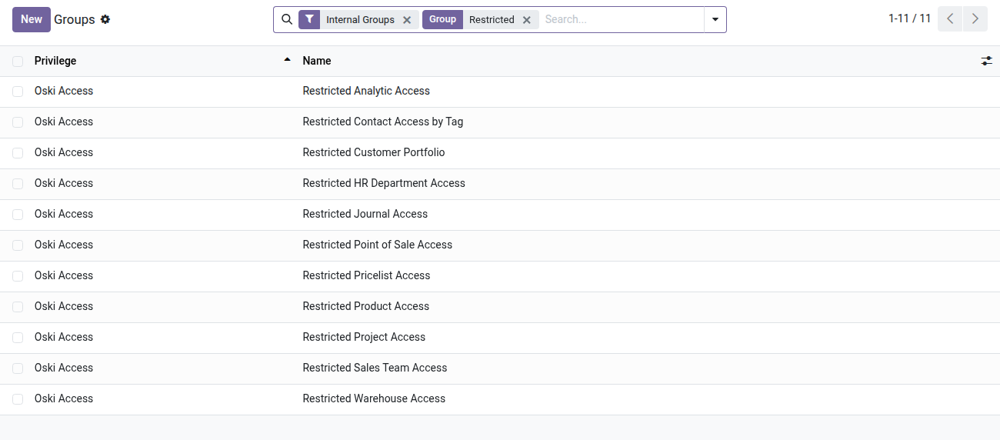
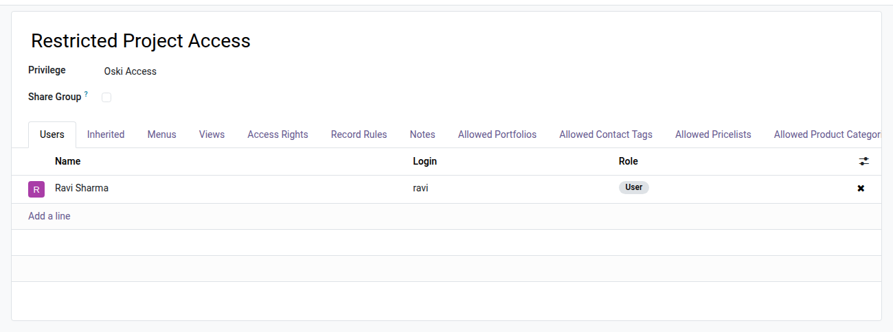

Oski Access Core
The shared foundation behind every dimension-based access control in Odoo Community.
Odoo Community cannot restrict access to a specific dimension — an accounting journal, a warehouse, an HR department, a sales team — for a given user or group. Administrators must choose between opening everything or locking everything down, with nothing in between. This module lays the shared foundations used by every OdooSkills dimension security module: a single install is enough to enable any pro add-on of the suite.
What it adds
- 🔒 Reusable access mixin — a common user-or-group structure, with read-only or full access level, shared by every module of the suite.
- ⚡ Smart level resolution — personal rights and rights inherited from groups are combined automatically; the most permissive level applies.
- 🧩 Odoo 19 category and privilege — each add-on's security groups are neatly organized under the "Oski Access" category in user settings.
- 📊 Foundation for 16 pro modules — each dimension add-on (journal, warehouse, department, team…) inherits directly from this core with no duplicated code.
Real screenshots
1. The suite's 12 groups organized under the Oski Access privilege
Once installed, the Oski Access category appears in the Odoo group list — each pro add-on then adds its own group to this structure.

Technical > Users > Groups" style="max-width:100%;border-radius:8px;border:1px solid #e5e7eb;box-shadow:0 4px 14px rgba(0,0,0,.07);margin:0 0 20px;"/>
2. Group detail — the Oski Access privilege in action
Every group created by a pro add-on (here Restricted analytic access) is attached to the Oski Access privilege defined by this foundation, ensuring consistent navigation in user settings.

Why install it
- ✅ Open source (LGPL-3) — it costs nothing and unlocks the whole Dimension Security suite.
- 🔒 Single prerequisite — one module to install to enable any pro add-on of the suite: journals, warehouses, departments, sales teams, contact tags, projects, PoS…
- ⚡ No technical overhead — an abstract model with no database table, zero performance impact until a pro add-on is enabled.
- 📊 Clean architecture — the access-level resolution logic is centralized here, tested once, and reliable for every module that depends on it.
Part of the Dimension Security suite
This foundation is the prerequisite for 16 pro add-ons, each restricting access along a business dimension:
- oski_account_journal_security — restriction by accounting journal
- oski_hr_department_security — restriction by HR department
- oski_sale_team_security — restriction by sales team
- oski_stock_location_security — restriction by stock location
- oski_cost_margin_security — hides cost and margin
- and 11 other dimensions (analytic, contact tag, project, PoS, pricelist…)
See the full suite on apps.odooskills.com.
License LGPL-3 — open source, compatible with Odoo 19.0. Support: apps@odooskills.com.